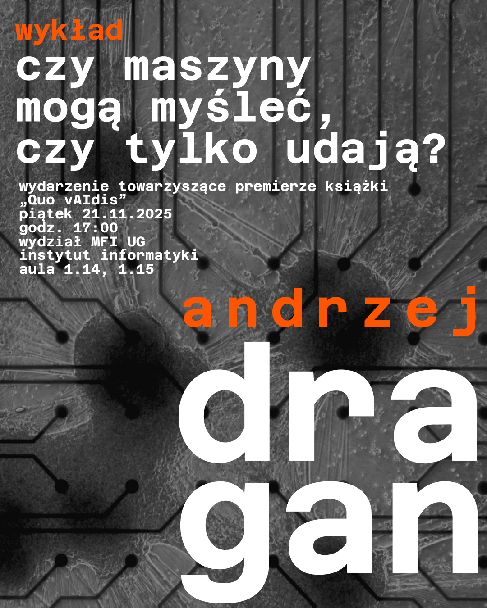
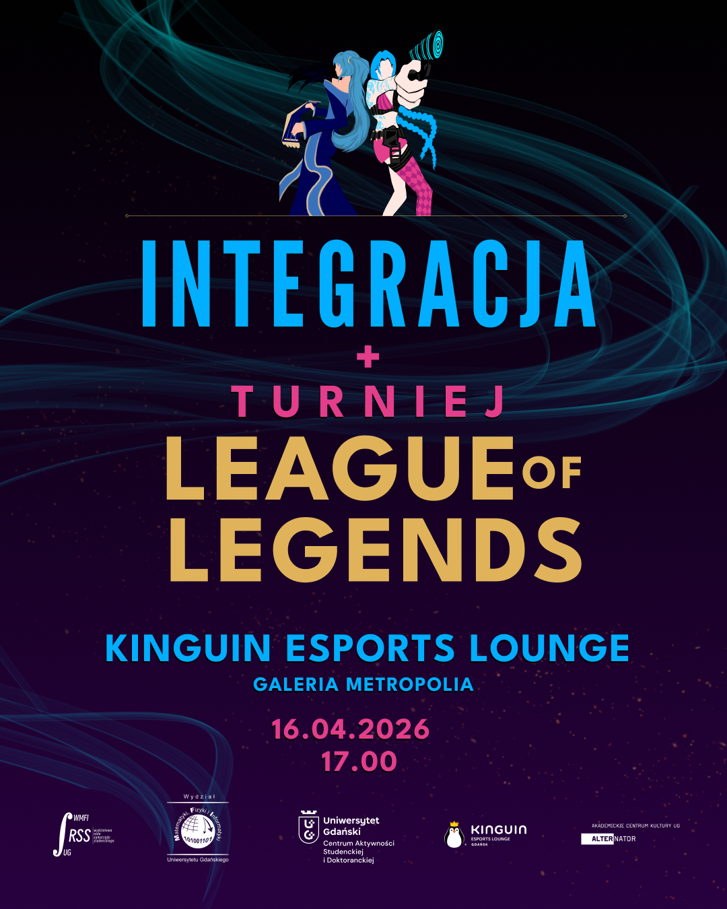
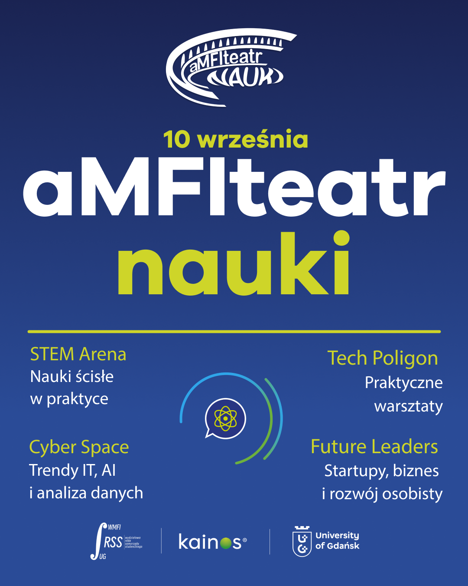
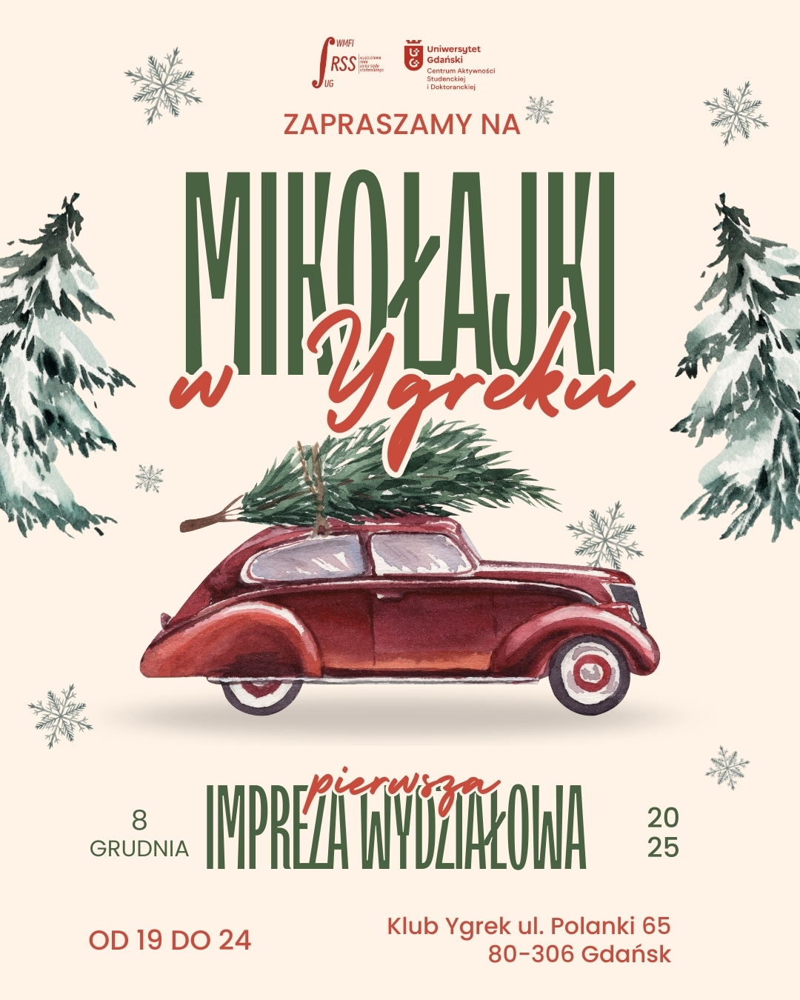

Działalność Studencka
Jako Przewodnicząca Rady Samorządu Studentów na Wydziale MFiI UG byłam organizatorką i koordynatorką wielu projektów edukacyjnych i integracyjnych.
aMFIteatr nauki 1.0 z prof. Andrzejem Draganem
Zobacz stronę wydarzeniaInauguracyjna edycja flagowego cyklu popularyzującego naukę na Wydziale. Głównym punktem był otwarty wykład wybitnego fizyka. Inicjatywa przyciągnęła pasjonatów nauki i skutecznie wypromowała innowacyjne podejście do nauk ścisłych.

aMFIteatr nauki 2.0 z dr. Tomaszem Millerem
Zobacz stronę wydarzeniaDruga odsłona cyklu z udziałem dr. Tomasza Millera, który przybliżył złożone koncepcje z pogranicza matematyki i fizyki. Wydarzenie zainspirowało studentów do samodzielnego zgłębiania tematów spoza standardowego programu studiów.

Wieczór Gamera i turniej League of Legends
Zobacz stronę wydarzeniaNowoczesne wydarzenie łączące e-sport z networkingiem, we współpracy z Kinguin Esports Lounge w Gdańsku. Turniej w LoL zgromadził graczy z całego wydziału, tworząc przestrzeń do integracji wokół pasji do gamingu.

aMFIteatr nauki 3.0 – side event Q-Con
Zobacz stronę wydarzeniaWyjątkowa edycja, zrealizowana jako wydarzenie towarzyszące międzynarodowej konferencji technologii kwantowych Q-Con. Edukacyjna minikonferencja dla uczniów szkół ponadpodstawowych promująca ścieżkę STEM.

Mentoring przedsesyjny i nocna nauka
Kompleksowy program wsparcia edukacyjnego. Inicjatywa łączyła pomoc merytoryczną od starszych roczników z udostępnieniem infrastruktury wydziału do późnych godzin wieczornych w celu redukcji stresu przedegzaminacyjnego.

MFIkołajki w Ygreku i Święto Wydziału
Wydarzenia integracyjne oraz organizacja najważniejszego dnia dla społeczności WMFiI. Obejmowały kompleksowe wsparcie komunikacyjne i logistyczne, budując przyjazne środowisko i silną tożsamość wydziałową.
